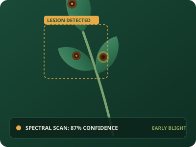

A clearer diagnosis for healthier crops.
Upload a clear photo of your crop leaf and get a simple AI-powered disease assessment with practical next steps.

Tomato Early Blight
Three simple steps to clarify crop health.
Designed for fast, reliable decision-making in the field or greenhouse.
POINT YOUR CAMERA
Take a clear photo of the affected leaf in natural daylight. Capture both healthy tissue and lesion margins for the best reading.
GET THE FIELD READ
Our AI analyzes visible patterns and identifies the most likely crop condition, rating confidence and disease severity.
TAKE THE NEXT STEP
Get practical information about the condition and suggested care actions, organic remediation, and seasonal prevention.
Helpful technology for everyday crop decisions.
Equipping growers, students, and agronomists with accessible visual intelligence.
1. AI Crop Detection
Detect possible crop diseases from uploaded leaf images using modern visual feature classification models.
2. Disease Information
Show disease name, biological classification, common visual symptoms, and clear botanical background information.
3. Treatment Guidance
Provide practical care, physical pruning instructions, safe fungicide guidance, and cultural prevention suggestions.
4. Detection History
Save previous diagnoses locally for later reference, longitudinal monitoring, and seasonal comparison across beds.
5. Confidence Score
Display transparent confidence percentages and severity ratings so you always know when to double-check in the field.
6. Farmer-Friendly Interface
Clean, clutter-free language without confusing academic jargon. Clear cards designed for high sunlight readability on phones.
Technology that speaks the language of the field.
Crop Doctor is a student and community project that explores how artificial intelligence and computer vision can assist farmers in identifying possible crop diseases from leaf images. By combining agricultural science with accessible web technology, our goal is to lower the barrier for timely crop protection.
Important Advisory Notice: Crop Doctor is an educational and demonstration project. The assessments provided are computer-generated approximations and must not replace professional on-site agricultural extension consultations, accredited laboratory tissue testing, or certified agronomic diagnoses.